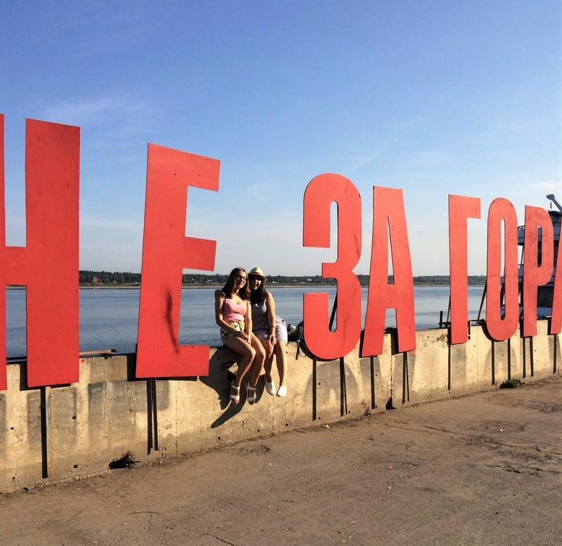

PERM

Hello! My name is Sofia Mamedova and I love traveling around Russia. I will begin my travel story with the city where I was born and raised. Perm is a city in the east of the European part of Russia, on the banks of the Ural River Kama. Industrial, scientific, cultural center of the Urals. The third largest city in Russia. There are many parks, museums and art objects in Perm.